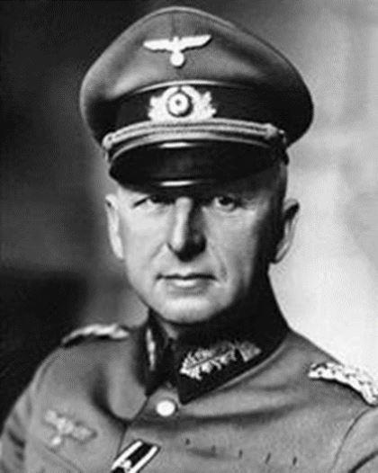

Nous avons fêté, les 8 et 9 mai, le 70e anniversaire de la fin de la Seconde Guerre mondiale qui a coûté la vie à plus de 60 millions de personnes. À en croire les films hollywoodiens, tout se serait joué lors de combats héroïques entre soldats américains et allemands ou japonais. Les historiens sont toutefois unanimes : l’Allemagne nazie a été vaincue par l’Armée rouge. Jacques Pauwels, historien et auteur d’un ouvrage sur la question, revient sur cette période et explique quand et comment la guerre a basculé vers la défaite inéluctable de l’Allemagne nazie.
La Seconde Guerre mondiale a débuté, du moins en ce qui concerne l’Europe, par l’irrésistible déferlement de l’armée allemande sur la Pologne en septembre 1939. Quelque six mois plus tard, des victoires encore plus spectaculaires ont suivi, cette fois sur les pays de l’actuel Benelux et sur la France. Durant l’été 1940, l’Allemagne semblait invincible et prédestinée à dominer indéfiniment le continent européen.
La Grande-Bretagne refusait certes de jeter le gant, mais elle ne pouvait espérer gagner la guerre à elle seule et craignait qu’Hitler ne dirigeât bientôt son attention vers Gibraltar, l’Égypte et/ou d’autres joyaux de la couronne de l’Empire britannique.
Mais, cinq ans plus tard, c’était l’Allemagne qui expérimentait la douleur et l’humiliation d’une défaite totale. Le 30 avril 1945, Hitler se suicidait à Berlin au moment même où l’Armée rouge se frayait au bulldozer un chemin dans la ville, réduite à un gigantesque amas de ruines fumantes. Les 8 et 9 mai, l’Allemagne se rendait sans condition.
Il est donc clair qu’à un moment donné, entre fin 1940 et 1944, le vent avait tourné du tout au tout. Mais quand, et où ? En Normandie, en 1944, selon certains ; à Stalingrad, au cours de l’hiver 1942-1943, selon d’autres. En réalité, le tournant s’est produit en décembre 1941, en Union soviétique, plus spécifiquement dans la plaine située juste à l’ouest de Moscou. Comme l’a écrit un historien allemand spécialiste de la guerre contre l’Union soviétique : « Cette victoire de l’Armée rouge [en face de Moscou] a constitué sans aucun doute la rupture majeure [Zäsur, en allemand = césure] de toute la guerre mondiale. »
Que l’Union soviétique ait été le théâtre de la bataille qui a changé le cours de la Seconde Guerre mondiale ne devrait pas constituer une surprise. La guerre contre l’Union soviétique a été la guerre qu’Hitler avait désirée dès le début, comme il l’avait expliqué clairement dans les pages de Mein Kampf, écrit au milieu des années 1920. Mais une Ostkrieg, une guerre à l’est, autrement dit contre les Soviétiques, était également l’objet du désir des généraux allemands, des principaux industriels de l’Allemagne et des autres « piliers » de l’establishment allemand. Un historien allemand a récemment démontré que c’était en fait une guerre contre l’Union soviétique, et non contre la Pologne, la France ou la Grande-Bretagne, qu’Hitler avait voulu déclencher en 1939. Le 11 août de cette année, Hitler avait expliqué à Carl J. Burckhardt, un responsable de la Société des Nations, que « tout ce qu’il entreprenait était tourné contre la Russie » et que « si l’Occident [c’est-à-dire les Français et les Britanniques] était trop stupide et aveugle pour le comprendre, il serait forcé d’en arriver à un compromis avec les Russes, de se tourner vers l’Occident et de le vaincre, puis de faire demi-tour avec toutes ses forces armées pour asséner un coup à l’Union soviétique ». C’est en fait ce qui s’est produit.
LA NÉCESSITÉ D’UNE BLITZKRIEG, UNE GUERRE ÉCLAIR
Hitler et les généraux allemands étaient convaincus d’avoir tiré une importante leçon de la Première Guerre mondiale. Privée des matières premières nécessaires pour gagner une guerre moderne, tels le pétrole et le caoutchouc, l’Allemagne ne pouvait gagner une guerre longue et interminable. Afin de gagner la prochaine guerre, l’Allemagne devait s’assurer une victoire rapidement, très rapidement. Voilà comment est né le concept de la Blitzkrieg, de la guerre éclair, c’est-à-dire l’idée d’une guerre (Krieg) aussi rapide que l’éclair (Blitz).
Blitzkrieg signifie une guerre motorisée et, au cours des années 1930, afin de la préparer, l’Allemagne avait produit des quantités massives de chars et d’avions, ainsi que de camions pour transporter ses troupes. En outre, des quantités gigantesques de pétrole et de caoutchouc avaient été importées et stockées. La majeure partie de ce pétrole avait été acheté à des compagnies américaines, dont certaines avaient également eu la gentillesse de mettre à la disposition de l’Allemagne la « recette » pour produire du carburant synthétique à partir de la houille. En 1939 et 1940, cet équipement allait permettre à la Wehrmacht et la Luftwaffe allemandes d’écraser en à peine quelques semaines les défenses polonaises, hollandaises, belges et françaises à l’aide de milliers d’avions et de chars ; les Bitzkriege, les « guerres éclair », étaient invariablement suivies de Blitzsiege, de « victoires éclair ».
Ces victoires avaient certes été spectaculaires, mais elles n’avaient pas fourni à l’Allemagne un très gros butin en pétrole et en caoutchouc, si vitalement importants. Au contraire, la guerre éclair avait plutôt appauvri les stocks constitués avant la guerre. Heureusement pour Hitler, en 1940 et 1941, l’Allemagne avait été en mesure de continuer à importer du pétrole depuis les États-Unis, toujours neutres – non pas directement, mais via d’autres pays neutres (et amis) comme l’Espagne de Franco. De plus, conformément aux termes du pacte entre Hitler et Staline, l’Union soviétique avait elle-même – et plutôt généreusement – approvisionné l’Allemagne en pétrole ! Toutefois, il était particulièrement ennuyeux pour Hitler qu’en échange, l’Allemagne ait dû approvisionner l’Union soviétique en produits industriels de haute qualité et en technologie militaire de pointe, laquelle allait être utilisée par les Soviétiques pour moderniser leur armée et améliorer leur armement.
Peu après la défaite de la France, c’est-à-dire au cours de l’été 1940, Hitler n’a pas tardé à ressortir son plan initial de guerre contre l’Union soviétique. Un ordre officiel de mettre sur pied cette attaque, au nom de code « Opération Barbarossa », était donné quelques mois plus tard, le 18 décembre 1940. Déjà en 1939, Hitler s’était montré très impatient d’attaquer l’Union soviétique et il ne s’était tourné vers l’ouest, comme l’a écrit un historien allemand, « que pour assurer sa sécurité à l’arrière (Rückenfreiheit) lorsqu’il aurait enfin été prêt à régler ses comptes avec l’Union soviétique ». Le même historien conclut qu’en 1940, rien n’avait changé en ce qui concernait Hitler : « Le véritable ennemi était celui se trouvant à l’est. »
« UN GÉANT AUX PIEDS D’ARGILE »
Hitler et ses généraux étaient confiants en ce que la Blitzkrieg qu’ils s’apprêtaient à déclencher contre l’Union soviétique connaîtrait la même réussite que leurs premières « guerres éclair » contre la Pologne et la France. Ils considéraient l’Union soviétique comme « un géant aux pieds d’argile » dont l’armée, supposée décapitée par les purges de Staline à la fin des années 1930, n’était « rien de plus qu’une plaisanterie », comme Hitler l’avait déclaré un jour. Afin de livrer – et, naturellement, de remporter – les batailles décisives, ils s’autorisaient une campagne de quatre à six semaines, sans doute suivie de l’une ou l’autre opération de nettoyage, au cours de laquelle les restes de l’armée soviétique seraient « traqués à travers le pays comme un ramassis de Cosaques vaincus ». Quoi qu’il en soit, Hitler était extrêmement confiant et, la veille de l’attaque, il s’imaginait « à l’aube du plus éclatant triomphe de son existence ».
L’attaque allemande a débuté le 22 juin 1941, dès les premières heures du jour. Trois millions de soldats allemands et près de 700 000 alliés de l’Allemagne nazie traversaient la frontière ; leur équipement consistait en 600 000 véhicules motorisés, 3 648 chars, plus de 2 700 avions et juste un peu plus de 7 000 pièces d’artillerie.
Au début, tout avait marché selon les plans. Des trous énormes avaient été creusés dans les défenses soviétiques, des gains territoriaux impressionnants avaient rapidement été réalisés et des centaines de milliers de soldats de l’Armée rouge avaient été tués, blessés ou capturés dans bon nombre de spectaculaires « batailles d’encerclement » (Kesselschlachten). À l’issue d’une bataille de ce genre, livrée non loin de Smolensk vers la fin juillet, la route de Moscou semblait grande ouverte.
Il est cependant très vite devenu évident que la guerre éclair à l’est n’allait pas être une promenade de santé comme on s’y était attendu. Confrontée à la plus puissante machine militaire sur terre, l’Armée rouge avait subi comme prévu une solide raclée, mais, comme le confiait le ministre de la Propagande Joseph Goebbels à son journal, le 2 juillet déjà, elle avait opposé une résistance tenace et avait riposté très vigoureusement à mainte occasion. Le général Franz Halder, à de nombreux titres le « parrain » du plan d’attaque de l’opération Barbarossa, faisait savoir que la résistance russe était bien plus acharnée que tout ce à quoi les Allemands avaient été confrontés en Europe occidentale. Des rapports de la Wehrmacht faisaient état d’une résistance « tenace », « rude » et même « sauvage », provoquant de lourdes pertes en hommes et en matériel dans le camp allemand. Plus souvent qu’escompté, les forces soviétiques s’arrangeaient pour lancer des contre-attaques qui ralentissaient l’avance allemande. Certaines unités soviétiques allaient se dissimuler dans les vastes marais du Pripet et ailleurs, organisaient une guerre de partisans mortelle et menaçaient les longues et vulnérables lignes allemandes de communication.
Il se faisait également que l’Armée rouge était bien mieux équipée que l’on ne s’y était attendu. Les généraux allemands étaient « ébahis », écrit un historien allemand, par la qualité des armes soviétiques, tel le lance-roquettes Katioucha (plus connu sous l’appellation « orgue de Staline ») et le char T-34. Hitler était furieux que ses services secrets n’aient pas été au courant de l’existence de certaines de ces armes.
FIN DE LA BLITZKRIEG
À la mi-juillet, comme la guerre d’Hitler à l’est commençait à perdre ses caractéristiques de « guerre éclair », certains dirigeants allemands s’étaient mis à exprimer de sérieuses inquiétudes. L’amiral Wilhelm Canaris, chef du service secret de la Wehrmacht, l’Abwehr, par exemple, avait confié le 17 juillet à un collègue du front, le général von Bock, qu’il ne voyait « rien que du noir ». En Allemagne même, de nombreux civils allemands avaient eux aussi fini par percevoir que la guerre à l’est ne se déroulait pas comme on l’avait souhaité.
À Dresde, Victor Klemperer écrivait dans son journal, le 13 juillet : « Nous subissons des pertes immenses, nous avons sous-estimé les Russes… »
À peu près au même moment, Hitler en personne ne croyait plus en une victoire rapide et facile et il avait revu ses espérances à la baisse. Il exprimait désormais l’espoir que ses troupes puissent atteindre la Volga en octobre et s’emparer des gisements pétroliers du Caucase un mois plus tard environ. Fin août, au moment où Barbarossa aurait dû tirer à sa fin, un mémorandum du Haut Commandement de la Wehrmacht faisait savoir qu’il pourrait ne plus être possible de gagner la guerre en 1941.
Une flambée d’optimisme s’était encore manifestée en septembre, quand les troupes allemandes s’étaient emparées de Kiev, faisant 650 000 prisonniers et, plus au nord, avaient progressé en direction de Moscou. Hitler croyait, ou du moins faisait semblant de croire, que la fin était désormais proche pour les Soviétiques. Dans un discours public prononcé au Palais des sports de Berlin, le 3 octobre, il avait déclaré que la guerre à l’est était virtuellement terminée. Et la Wehrmacht s’était vu intimer l’ordre de porter le coup de grâce en lançant l’« Opération Typhon », une offensive visant à s’emparer de Moscou. Toutefois, les chances de succès semblaient de plus en plus minces, du fait que les Soviétiques s’activaient à incorporer des unités de réserve venues d’Extrême-Orient. Ils avaient été informés par leur maître-espion à Tokyo, Richard Sorge, de ce que les Japonais, dont l’armée était stationnée dans le nord de la Chine, n’envisageaient plus d’attaquer les frontières vulnérables des Soviétiques dans la région de Vladivostok. Pour rendre les choses pires encore, les Allemands ne bénéficiaient plus non plus de la suprématie des airs, particulièrement au-dessus de Moscou. De même, les approvisionnements en munitions et en nourriture acheminés de l’arrière vers le front étaient insuffisants, du fait que les longues lignes de ravitaillement étaient fortement entravées par l’activité des partisans. Et, enfin, en Union soviétique, il commençait à faire froid, bien que pas plus froid que la normale en cette période de l’année. Mais le haut commandement allemand, confiant en ce que la guerre éclair à l’est serait terminée pour la fin de l’été, avait négligé de fournir à ses troupes les équipements nécessaires pour combattre dans la pluie, la boue, la neige et les températures glaciales de l’automne et de l’hiver en Russie.
Mais, pour Hitler et ses généraux, la prise de Moscou apparaissait comme un objectif d’une importance capitale. Ils croyaient, à tort, que la chute de Moscou allait « décapiter » l’Union soviétique et, partant, provoquer son effondrement.
ÉVITER UNE NOUVELLE « BATAILLE DE LA MARNE »
Il apparaissait également important d’éviter une répétition du scénario de l’été 1914, lorsque l’avance allemande, apparemment irrésistible, avait été stoppée in extremis dans la périphérie est de Paris, lors de la bataille de la Marne. Ce désastre – selon la perspective allemande – avait privé l’Allemagne d’une victoire quasi certaine lors des premiers stades de la « Grande Guerre » et l’avait forcée à une longue lutte que, vu le manque de ressources suffisantes et le blocus imposé par la marine de guerre britannique, elle était condamnée à perdre.
Cette fois, dans une nouvelle Grande Guerre livrée contre un nouvel ennemi mortel, l’Union soviétique, il ne devait pas y avoir de « miracle de la Marne », c’est-à-dire pas de défaite juste en dehors de la capitale ; et l’Allemagne n’allait par conséquent pas devoir se battre une fois de plus, dans un conflit tiré en longueur, un conflit que, sans les matières premières essentielles et entravées par un blocus, elle serait condamnée à perdre. Au contraire de Paris, Moscou allait tomber, l’histoire n’allait pas se répéter et l’Allemagne finirait par être victorieuse. Ou, du moins, c’est ce que l’on espérait au quartier général d’Hitler.
SI L’UNION SOVIÉTIQUE AVAIT ÉTÉ BATTUE EN 1941…
La Wehrmacht avait continué à progresser, bien que très lentement, et, à la mi-novembre, certaines unités s’étaient trouvées à 30 kilomètres à peine de la capitale. Mais les troupes étaient totalement épuisées, et désormais à court d’approvisionnement. Leurs commandants savaient qu’il était tout simplement impossible de prendre Moscou, aussi exaspérante que fût la proximité de la ville et, même s’ils l’avaient fait, cela ne leur aurait pas apporté la victoire. Le 3 décembre, nombre d’unités avaient abandonné l’offensive de leur propre initiative. En quelques jours, toute l’armée allemande en face de Moscou avait été forcée d’adopter une position défensive. En effet, le 5 décembre, à 3 heures du matin, dans des conditions hivernales russes, l’Armée rouge avait brusquement lancé une contre-attaque majeure et bien préparée. Les lignes de la Wehrmacht avaient été enfoncées en de nombreux endroits et les Allemands avaient été repoussés à des distances de 100 à 280 kilomètres, avec de lourdes pertes en hommes et en matériel. Ce n’est qu’avec de grandes difficultés qu’un encerclement catastrophique (Einkesselung) avait pu être évité. Le 8 décembre, Hitler ordonnait à son armée d’abandonner l’offensive et de se replier sur des positions défensives. Il avait rejeté la faute de ce revers sur l’arrivée supposée inattendue de l’hiver, avait refusé de reculer davantage vers l’arrière, comme certains de ses généraux le lui avaient suggéré et avaient proposé d’attaquer à nouveau au printemps.
Ainsi donc, la guerre éclair d’Hitler contre l’Union soviétique était terminée, cette guerre qui, si elle avait été victorieuse, aurait concrétisé la grande ambition de sa vie, la destruction de l’Union soviétique. Qui plus est, d’un point de vue stratégique, une telle victoire aurait également fourni à l’Allemagne nazie suffisamment de pétrole et d’autres ressources pour en faire une puissance mondiale pratiquement invulnérable.
En tant que telle, l’Allemagne nazie aurait très probablement été à même d’en finir avec l’entêtement britannique, même si les États-Unis s’étaient précipités pour aider leurs cousins anglo-saxons, ce qui, incidemment, n’était pas encore prévu aux tout premiers jours de décembre 1941. Une Blitzsieg, une victoire éclair contre l’Union soviétique, dans ce cas, aurait rendu une défaite allemande impossible. Si l’Allemagne nazie avait vaincu l’Union soviétique en 1941, l’Allemagne serait toujours aujourd’hui la première puissance d’Europe, et probablement aussi la maitresse du Moyen-Orient et de l’Afrique du Nord. Cependant, la défaite lors de la bataille de Moscou en décembre 1941 signifiait que la guerre éclair d’Hitler n’avait pas débouché sur la victoire éclair tant espérée. Dans cette nouvelle « bataille de la Marne », juste à l’ouest de Moscou, l’Allemagne nazie avait subi la défaite qui rendait toute victoire impossible, non seulement la victoire contre l’Union soviétique, mais aussi la victoire contre la Grande-Bretagne, la victoire de la guerre en général.
En ayant à l’esprit les leçons de la Première Guerre mondiale, Hitler et ses généraux avaient su dès le début que, s’ils voulaient gagner la nouvelle « Grande Guerre » qu’ils avaient déclenchée, l’Allemagne devait être rapidement victorieuse, à la vitesse de l’éclair. Mais, le 5 décembre 1941, il était devenu évident aux yeux de tous ceux qui étaient présents au quartier général d’Hitler qu’une victoire éclair contre l’Union soviétique ne se produirait pas, de sorte que l’Allemagne était condamnée à perdre la guerre, sinon très bientôt, du moins un peu plus tard. Selon le général Alfred Jodl, chef de l’état-major des opérations de l’OKW, c’est alors qu’Hitler avait compris qu’il ne pourrait plus gagner la guerre.
ET LE COURS DE LA GUERRE A TOURNÉ
On peut donc affirmer que le cours de la Seconde Guerre mondiale a tourné le 5 décembre 1941. Toutefois, à l’image du cours des marées qui ne change pas brusquement, mais progressivement et de façon imperceptible, le cours de la guerre a aussi tourné non pas en un seul jour, mais sur une période de plusieurs jours, semaines et même mois, à savoir durant la période d’environ trois mois entre la fin de l’été 1941 et le début décembre de la même année.
Le cours de la guerre à l’est avait tourné progressivement, mais pas d’une façon aussi imperceptible. Déjà en août 1941, comme les succès allemands n’amenaient pas une capitulation soviétique et que la progression de la Wehrmacht se ralentissait considérablement, des observateurs avisés s’étaient mis à douter qu’une victoire allemande soit possible, non seulement en Union soviétique, mais dans la guerre en général. Par exemple le Vatican, bien informé et initialement très enthousiaste quant à la « croisade » d’Hitler contre la patrie soviétique du bolchevisme « athée » et confiant dans le fait que les Soviétiques allaient s’effondrer immédiatement, s’était mis à exprimer de graves inquiétudes à propos de la situation à l’est à la fin de l’été 1941. À la mi-octobre, il allait en arriver à la conclusion que l’Allemagne devait perdre la guerre. De même, à la mi-octobre, les services secrets suisses avaient rapporté que « les Allemands ne peuvent plus gagner la guerre » ; cette conclusion s’appuyait sur des informations recueillies en Suède à partir de déclarations d’officiers allemands en visite.
Fin novembre, un défaitisme de mauvais augure avait infecté progressivement les hauts rangs de la Wehrmacht et du parti nazi. Même s’ils pressaient leurs troupes vers l’avant, en direction de Moscou, certains généraux estimaient qu’il eût été préférable de faire des ouvertures de paix et de mettre progressivement un terme à la guerre sans obtenir la grande victoire qui semblait assurée au début de l’Opération Barbarossa. Et, peu après la fin novembre, le ministre de l’Armement Fritz Todt avait demandé à Hitler de trouver une voie diplomatique pour sortir de la guerre, puisque, sur le plan purement militaire de même que sur le plan industriel, cette guerre était certainement perdue.
UNE DÉFAITE ALLEMANDE INÉVITABLE
Quand l’Armée rouge avait lancé sa contre-offensive dévastatrice, le 5 décembre, Hitler lui-même avait compris qu’il allait perdre la guerre. Mais, naturellement, il n’était pas disposé à le faire savoir au public allemand. Les mauvaises nouvelles du front à proximité de Moscou avaient été présentées au public comme un repli temporaire, imputable à l’arrivée précoce, supposée inattendue, de l’hiver et/ou à l’incompétence ou la lâcheté de certains commandants. Ce ne serait qu’une bonne année plus tard, après la défaite catastrophique de la bataille de Stalingrad, au cours de l’hiver 1942-1943, que le public allemand et le monde entier allaient comprendre que l’Allemagne était condamnée ; c’est pourquoi, même aujourd’hui, beaucoup d’historiens croient que c’est à Stalingrad que le vent avait tourné. Mais il s’avérait impossible de garder un secret total sur les implications catastrophiques de la débâcle à proximité de Moscou. Par exemple, le 19 décembre 1941, le consul d’Allemagne à Bâle rapportait à ses supérieurs à Berlin que le chef (ouvertement pro-nazi) d’une mission de la Croix-Rouge suisse, envoyé sur le front en Union soviétique pour n’assister que les blessés du côté allemand – ce qui contrevenait aux réglementations de la Croix-Rouge – était revenu en Suisse avec l’information, très surprenante aux yeux du consul, qu’« il ne croyait plus que l’Allemagne pût gagner la guerre ».
L’Allemagne nazie était condamnée, mais la guerre devait encore être longue. Hitler avait ignoré le conseil de ses généraux qui recommandaient avec insistance d’essayer de trouver une issue diplomatique à la guerre, et il avait décidé de continuer à se battre dans le mince espoir d’une victoire. La contre-offensive russe allait s’essouffler, la Wehrmacht allait survivre à l’hiver 1941-1942 et, au printemps 1942, Hitler allait ratisser toutes ses forces disponibles et les rassembler pour une offensive – dont le nom de code serait « Opération Bleue » (Unternehmen Blau), en direction des gisements pétroliers du Caucase – via Stalingrad. Hitler reconnaissait lui-même que, « s’il ne mettait pas la main sur le pétrole de Maikop et de Grozny, il lui faudrait alors mettre un terme à cette guerre ».
Cependant, l’élément de surprise avait été perdu et il s’avérait que les Soviétiques disposaient de masses gigantesques d’hommes, de pétrole et d’autres ressources, de même que d’un excellent équipement, dont une grande partie était produite dans des usines qui avaient été construites de l’autre côté de l’Oural entre 1939 et 1941. La Wehrmacht, d’autre part, ne pouvait compenser les énormes pertes qu’elle avait subies en 1941. Entre le 22 juin 1941 et le 31 janvier 1942, les Allemands avaient perdu 6 000 avions et plus de 3 200 chars et véhicules similaires ; et pas moins de 918 000 hommes avaient été tués, blessés ou portés manquants durant l’action, ce qui correspondait à 28,7 % de la force moyenne de l’armée, à savoir 3,2 millions d’hommes. En Union soviétique, l’Allemagne allait perdre pas moins de 10 millions d’hommes sur un total de 13,5 millions de tués, de blessés ou de prisonniers, durant toute la durée de la guerre. Et l’Armée rouge est responsable de 90 % de tous les Allemands tués au cours de la Seconde Guerre mondiale.
Les forces disponibles pour une avancée vers les champs pétroliers du Caucase étaient donc de ce fait extrêmement limitées. Dans de telles circonstances, il est tout à fait remarquable qu’en 1942, les Allemands soient parvenus à aller jusqu’à ce point. Mais quand leur offensive avait inévitablement abouti à une impasse, en septembre de cette même année, leurs lignes faiblement défendues s’étiraient sur des centaines et des centaines de kilomètres, présentant ainsi une cible parfaite pour une attaque soviétique. Quand cette attaque s’était produite, elle avait provoqué le refoulement complet de l’armée allemande et sa destruction, en fin de compte, à Stalingrad. C’est après cette grande victoire de l’Armée rouge que le caractère inéluctable de la défaite allemande dans la Seconde Guerre mondiale allait être évident aux yeux de tous. Toutefois, la défaite allemande apparemment mineure et relativement inattendue en face de Moscou, fin 1941, avait été la condition préalable de la défaite assurément plus spectaculaire et plus « visible » de Stalingrad.
Partager cette page